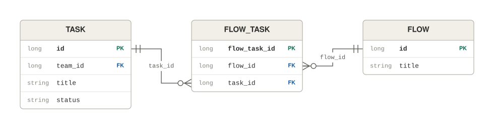
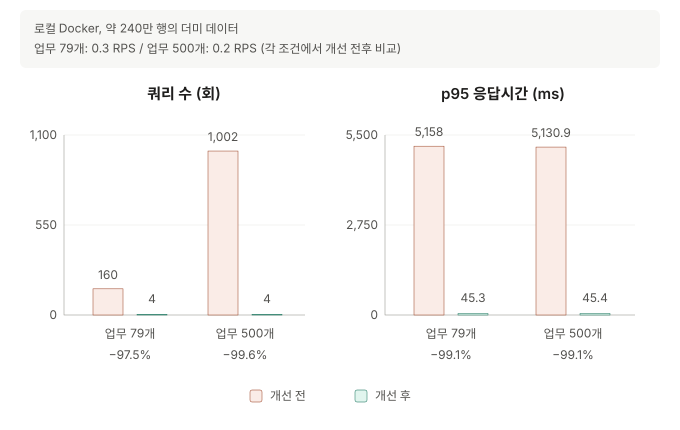
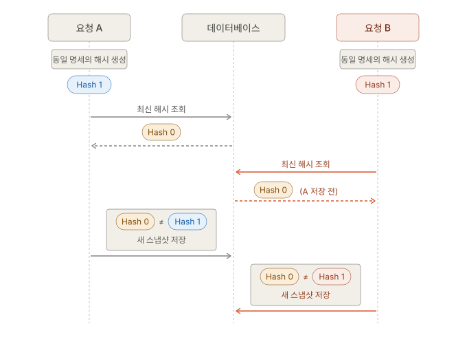
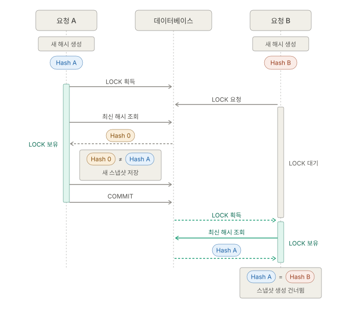
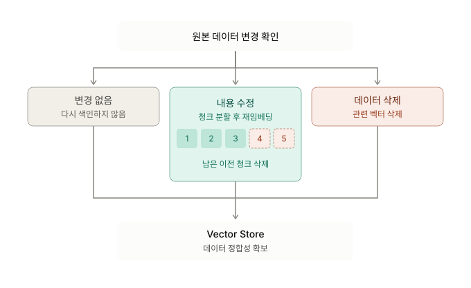
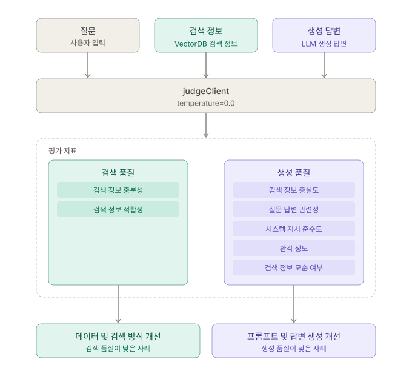

프로젝트 1
Nexus — 기획, 화면, API를 연결하는 협업 플랫폼
- 개발 기간
- 2026.01 ~ 2026.06 (숙명여자대학교 졸업프로젝트)
- 참여 형태
- 팀장, 백엔드 및 AI 기능 전반 담당
- Java
- Spring Boot
- JPA
- MySQL
- Spring AI
- Redis
- SSE
- MCP
- k6
서비스와 개발 배경
API 정보와 변경 이력을 공유하는 협업 플랫폼입니다. 기획 문서, 화면 설계, API 명세가 서로 다른 도구에 흩어져 있어 변경된 명세를 뒤늦게 확인하고 연동 오류를 겪는 문제에서 출발했습니다.
Notion의 기획 항목을 업무(Task)로 동기화하고, 이를 서비스의 화면 단위인 Flow와 연결합니다. 화면 이미지의 특정 위치에 API를 연결해 어떤 업무와 화면에서 해당 API를 사용하는지 확인할 수 있습니다. Swagger 명세 변경을 감지하면 연결된 화면에서 변경 여부를 확인합니다.
팀 문서를 검색하는 RAG 챗봇과 외부 AI 도구가 업무, API 명세, QA 결과를 조회하는 MCP 서버도 제공합니다.
담당 역할
- 백엔드 개발: Java와 Spring Boot로 RESTful API를 개발하고, JPA와 MySQL로 데이터 관리
- 성능 및 동시성 개선: 로컬 재현 환경에서 k6와 Hibernate 실행 통계로 조회 병목을 분석하고, 동시 요청의 중복 저장 문제 개선
- AI 기능: RAG 챗봇, 검색 및 생성 품질 평가, SSE 응답 스트리밍, 외부 AI 클라이언트 인가 및 MCP 도구 구현
- 팀 운영: 데일리 스크럼, 브랜치 전략, 이슈 및 PR 규칙 수립, PR 등록 시 Discord Webhook 알림 연동
핵심 결과
업무 목록의 반복 조회와 인덱스를 개선해, 로컬 Docker 환경에서 업무 79개를 0.3 RPS로 조회할 때 쿼리 수를 160회에서 4회로, p95 응답시간을 약 5.2초에서 45.3ms로 줄였습니다. 또한 여러 요청이 동시에 API 명세를 저장할 때 데이터베이스 잠금으로 중복 저장을 방지했습니다. 동시 요청 5개에서 생성되는 동일한 신규 스냅샷이 5개에서 1개로 줄었으며, 이를 3회 반복 검증했습니다.
문제 해결 ① 업무 목록 조회 성능 개선
- 대상 기능
- 팀의 업무(Task) 목록과 각 업무에 연결된 화면(Flow) 정보를 함께 조회하는 API입니다.
TASK와FLOW의 M:N 관계를FLOW_TASK매핑 테이블로 관리했습니다.
- 문제
- 로컬 Docker 환경에서 k6로 초당 0.3회 요청했을 때 p95 응답시간이 약 5.2초에 달했습니다. 요청 빈도를 0.8 RPS로 높이자 p95가 약 32초까지 증가했습니다.
- 원인 분석
- Hibernate 실행 통계로 업무마다 연결 정보를 반복 조회하는 N+1 문제를 확인했습니다. 업무별로
flow_task와flow를 조회해, 업무 79개에서는 쿼리가 160회, 500개에서는 1,002회 실행됐습니다.EXPLAIN ANALYZE로 기존(flow_id, task_id)복합 unique 인덱스가task_id단독 조회에 비효율적인 점도 확인했습니다. - 해결 방법
- 반복 조회를
IN조건의 일괄 조회로 바꾸고, 결과를 메모리에서 업무별로 합쳤습니다. 조회 조건에 맞춰flow_task(task_id),task(team_id),member_team(member_id)인덱스를 추가했습니다. - 측정 환경
- 로컬 Docker에 약 240만 행의 더미 데이터를 적재했습니다. App과 MySQL 컨테이너는 각각 2 CPU, 2GB로 제한했고, k6로 개선 전후를 비교했습니다.
- 결과
- 업무 79개를 조회하는 동일 조건에서 쿼리는 160회에서 4회, p95 응답시간은 5,158ms에서 45.3ms로 줄었습니다. 업무를 500개로 늘린 경우에도 쿼리가 1,002회에서 4회로 줄어, 두 데이터 규모에서 같은 쿼리 수를 유지했습니다.
업무 수와 요청 빈도별 개선 전후 비교 조회 업무 수 요청 빈도 쿼리 수 (전 → 후) p95 응답시간 (전 → 후) 79개 0.3 RPS 160회 → 4회 5,158ms → 45.3ms 500개 0.2 RPS 1,002회 → 4회 5,130.9ms → 45.4ms

문제 해결 ② Swagger 동기화의 동일 스냅샷 중복 저장 방지
- 동기화 과정
- Swagger 명세를 조회해
spec_hash를 생성하고 최신 스냅샷의 해시와 비교합니다. 해시가 다르면 명세를 파싱하고 정규화해 새 스냅샷으로 저장합니다. - 문제 및 원인
- 같은 팀에 동기화 요청 5개를 동시에 보내자 동일한 해시를 가진 신규 스냅샷이 5개 생성됐습니다. 최신 해시 조회와 저장 사이에 동시성 제어가 없어, 여러 요청이 선행 요청의 저장 결과가 반영되기 전에 같은 해시를 읽고 새 스냅샷이 필요하다고 판단했습니다.

- 해결 방법
- 팀 행에
PESSIMISTIC_WRITE잠금을 적용해 같은 팀의 최신 해시 조회와 스냅샷 저장을 순차 처리했습니다. 후속 요청은 선행 트랜잭션의 커밋 후 최신 해시를 읽으므로, 해시가 같으면 저장을 건너뜁니다.
- 결과
- 동시 요청 5개로 3회 반복 검증한 결과, 생성되는 신규 스냅샷이 5개에서 1개로 줄었습니다.
문제 해결 ③ 원본 변경에 따른 RAG 검색 데이터 정리
- 문제 및 원인
- 원본 데이터가 수정되거나 삭제돼도 이전 청크가 Vector Store에 남아, 현재는 없는 정보가 답변의 근거로 사용됐습니다. 새 청크를 upsert하는 것만으로는 수정 과정에서 사라진 청크나 삭제된 원본의 벡터를 정리할 수 없었습니다.
- 해결 방법
- 원본별 색인 관리 정보와 내용 변경 여부를 관리해 변경된 데이터만 재색인했습니다. 수정으로 청크 수가 줄면 남은 이전 청크를 삭제하고, 원본 삭제 시 관련 벡터와 색인 관리 정보도 함께 정리했습니다.
- 결과
- 변경되지 않은 데이터의 반복 임베딩을 줄이고, 수정 또는 삭제로 불필요해진 청크가 검색 대상에 남지 않도록 했습니다.

문제 해결 ④ RAG 검색 품질과 생성 품질을 분리한 평가
- 문제
- 최종 답변만으로는 필요한 근거를 검색하지 못했는지, 검색한 근거를 답변 생성에 제대로 활용하지 못했는지 구분하기 어려웠습니다.
- 해결 방법
- 질문, 검색된 컨텍스트, 생성 답변을 별도
judgeClient에 전달하는 LLM-as-a-Judge 평가를 구현했습니다. 검색 정보의 충분성과 적합성, 생성 답변의 충실도 등을 다음 7개 기준으로 평가하고 JSON으로 반환받았습니다. 평가 요청의temperature는0.0으로 설정했습니다.구분 지표 의미 검색 품질 검색 정보 충분성 질문에 답하는 데 필요한 정보가 검색 결과에 얼마나 충분히 포함됐는지 검색 정보 적합성 검색된 정보가 질문과 답변에 얼마나 관련 있고 유용한지 생성 품질 검색 정보 충실도 답변이 검색 정보에 의해 얼마나 충실하게 뒷받침되는지 질문 답변 관련성 답변이 사용자 질문의 의도와 핵심에 얼마나 직접적으로 대응하는지 시스템 지시 준수도 한국어 응답, 원문 인용 등 지정한 응답 규칙을 얼마나 준수하는지 환각 정도 검색 정보에 없거나 검색 정보로 뒷받침되지 않는 내용이 포함된 정도 검색 정보 모순 여부 답변이 검색 정보와 명백하게 상충하는지 여부 - 결과
- 검색 품질이 낮은 사례와 검색 결과는 적절하지만 생성 품질이 낮은 사례를 분리해 확인할 수 있게 됐습니다. 검색 데이터와 검색 방식, 생성 프롬프트 중 어느 부분을 검토할지 판단하는 평가 기준을 마련했습니다.

구현 상세 — 외부 AI 연동과 응답 스트리밍
- MCP 도구 설계
- 사용자가 API 명세와 QA 실패 응답을 복사해 AI에 전달하는 과정을 줄이기 위해, 업무 목록과 상세 정보, API 스키마, QA 실패 결과를 조회하는 도구를 구현했습니다. 도구별 사용 시점과 파라미터 예시를 명시하고, 호출 실패 시 원인을 자연어로 반환했습니다.
- 외부 클라이언트 인가
- AI 도구가 사용자의 권한으로 서비스 데이터에 접근하도록 OAuth 인가 코드 방식을 적용했습니다. CLI와 데스크톱 클라이언트에서
client_secret보관에 의존하지 않도록 PKCE를 적용했습니다. - SSE 스트리밍
- POST 요청으로 질문과 팀 및 회원 정보를 Redis에 저장하고
streamId를 발급한 뒤, GET 요청으로 SSE 연결을 엽니다. 연결 시streamId의 소유자와 팀이 일치하는지 확인하고,@Async전용 스레드풀로 스트리밍 작업을 일반 API 요청 스레드와 분리했습니다.

회고
- 성능 개선에서는 실행 통계와 실행 계획으로 반복 조회를 확인하고 쿼리와 인덱스를 수정했습니다. 커넥션 풀, 스레드 수, 힙 크기 등을 변경했지만, 그 효과가 같은 설정을 반복 측정했을 때의 편차인 약 14% 안에 있어 기본값을 유지했습니다.
- RAG 답변을 개선하려면 검색 대상이 현재 원본과 일치하는지 먼저 확인하고, 검색과 생성 중 어느 단계에서 문제가 생겼는지 나눠 평가해야 한다는 점을 배웠습니다.